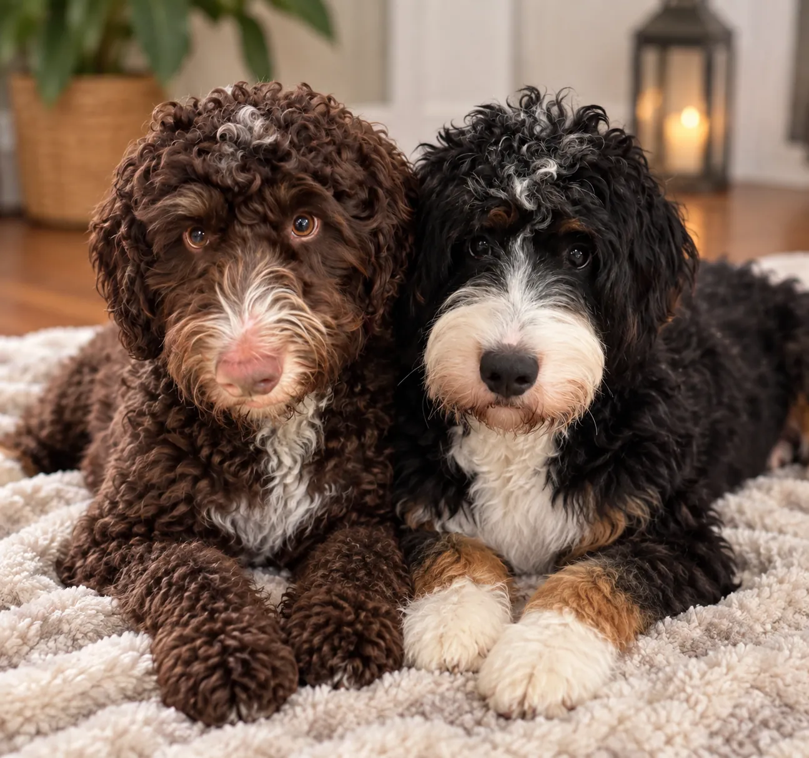
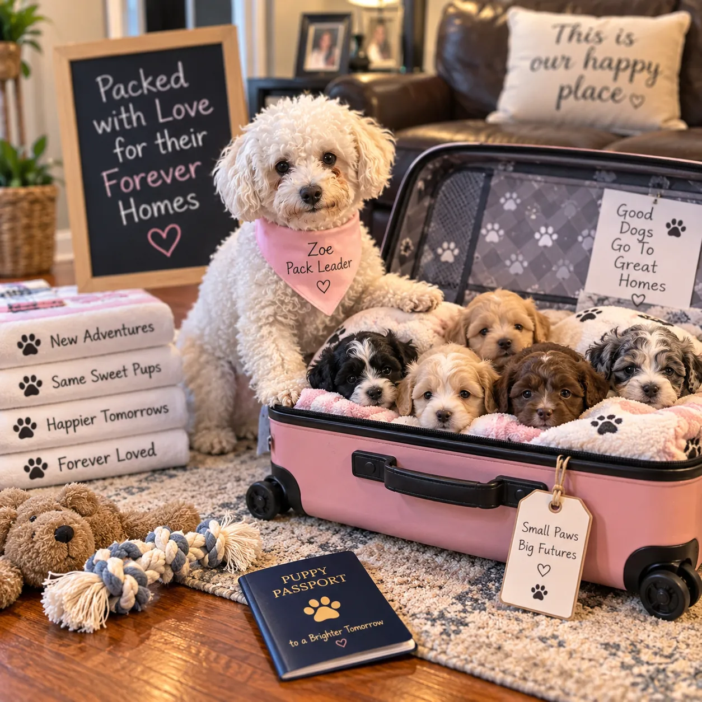
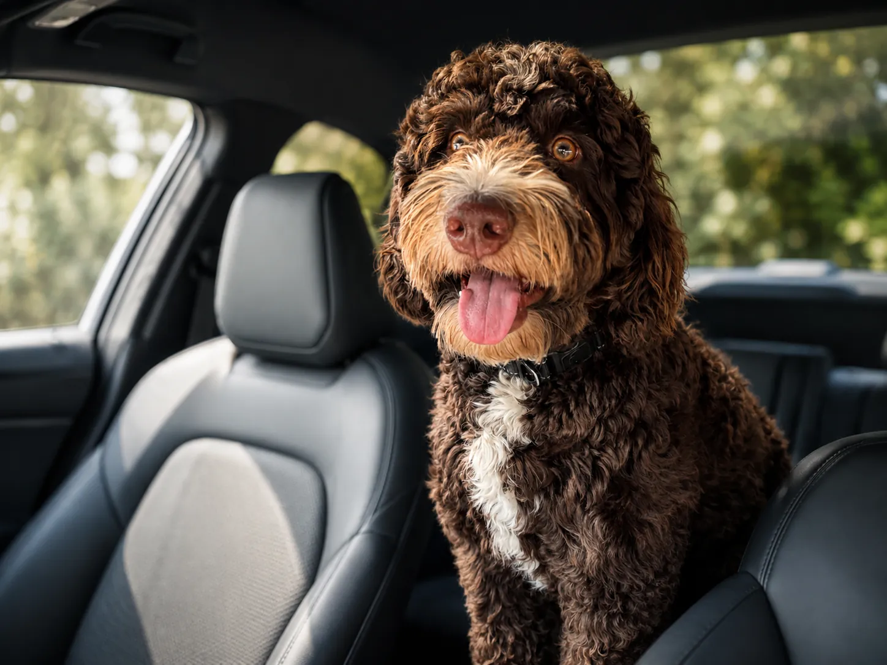
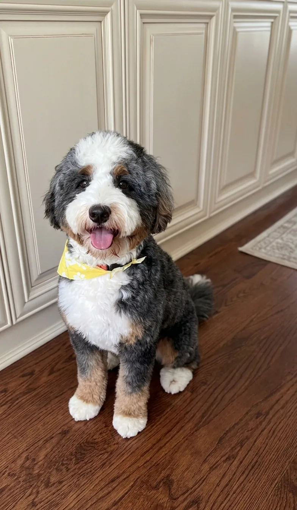
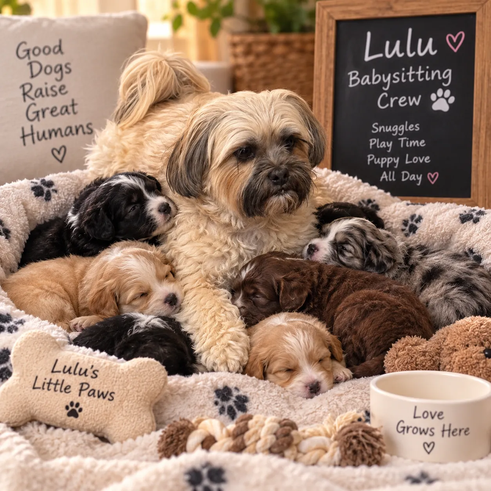

01
Small by choice
We do not operate rows of kennels. We breed our own beloved family dogs.
Before they become part of your family, they’re part of ours.
Apply for a puppyOur Story
Stony Point Doodles began with something very simple: we fell in love with Bernedoodles.

Long before we ever thought about breeding, we were Bernedoodle owners ourselves. We fell in love with their affectionate personalities, intelligence, playful nature, loyalty, and, of course, those irresistible teddy bear faces.
Our own dogs have brought an incredible amount of happiness, laughter, companionship, and love into our home. They are not simply pets to us. They are part of our family and part of our everyday lives.
Over time, we realized that one of the few things that could be more rewarding than having these wonderful dogs ourselves would be helping other families experience that same joy.
That is how Stony Point Doodles was born.

There is something special about watching a family meet their puppy for the first time.
We know the excitement of bringing home a new puppy, watching their personality develop, seeing them become part of the family, and eventually wondering how you ever lived without them.
That experience is at the heart of our breeding program.
Our goal is not simply to raise puppies. We want to help connect loving families with wonderful companions who can become an important part of their lives for years to come.
Every time one of our puppies leaves our home, we know that another family’s story is just beginning.

When we began looking more closely at Bernedoodle breeding, we noticed something surprising. Families searching for Mini Bernedoodle puppies in New York, New Jersey, and the greater NYC area often had relatively few local options.
Many families were traveling several hours or even out of state to find the right Bernedoodle breeder.
We wanted to help change that.
Stony Point Doodles was created to provide families throughout the New York metropolitan area, Hudson Valley, Westchester County, Rockland County, Northern New Jersey, and surrounding Tri State area with a more local and personal option for finding their next Bernedoodle.
We are a small, family focused breeding program specializing in Multigenerational Mini‑Bernedoodles. Keeping our program personal allows us to know our dogs, spend meaningful time with our puppies, and give our puppy families the individual attention we would want if we were searching for a puppy ourselves.

Our dogs are family first.
Our puppies begin their lives in a home environment surrounded by the normal sights, sounds, activity, attention, and affection of family life. From their earliest days, they are handled, loved, and given the opportunity to become comfortable interacting with people.
We believe those early experiences matter.
Our hope is to raise happy, confident, affectionate Mini Bernedoodle puppies that are prepared to make the transition from our family to yours.

We chose to focus on Multigenerational Mini‑Bernedoodles because we love what this combination can offer families.
Bernedoodles are known for combining many of the wonderful characteristics associated with the Bernese Mountain Dog and Poodle. We especially love their affectionate personalities, intelligence, loyalty, playful spirit, and strong desire to be around their people.
For us, the Mini Bernedoodle offers those qualities in a more manageable size that can fit comfortably into many different family lifestyles.
But ultimately, our decision to breed Bernedoodles comes back to the same reason we started:
We simply love these dogs.

Stony Point Doodles is intentionally small and personal.
We want our puppy families to feel comfortable asking questions, getting to know us, meeting our dogs, following their puppy as it grows, and becoming part of the Stony Point Doodles family.
For us, one of the most rewarding parts of breeding is staying connected after our puppies go home and seeing them grow into beloved members of their new families.
If you are searching for a Mini Bernedoodle breeder in New York, a Bernedoodle breeder near NYC or New Jersey, or simply trying to find the right family raised Bernedoodle puppy, we invite you to learn more about Stony Point Doodles.
Maybe your family’s next chapter begins with four little paws.
Welcome to Stony Point Doodles. From our family to yours.
How we work
We’re trying to raise our puppies the right way.
Before they become part of your family, they’re part of ours.
01
We do not operate rows of kennels. We breed our own beloved family dogs.
02
Every litter is born and raised inside our house, not a commercial kennel.
03
Genetics, health, temperament, and structure come before anything else.
04
Before they become part of your family, they’re part of ours.
More than a puppy
A puppy changes a household. There are kisses, midnight potty trips, chewed shoes, zoomies, and eventually the dog waiting at the door when you come home.
We are not simply looking for someone to purchase a puppy. We are looking for the families who will love them.
We care where our puppies go.